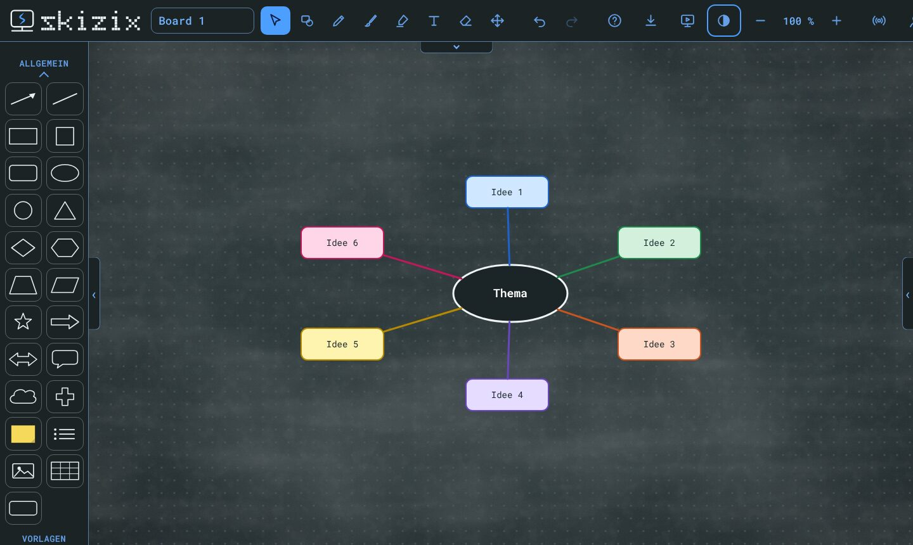

Skizix
Das Whiteboard für Ideen, Abläufe und Präsentationen. Formen reinziehen, Pfeile verbinden, Folien zeigen – im Browser, auf dem iPad, am PC und am Handy.
FunktionenAlles, was ein gutes Whiteboard braucht
Skizix ist schnell verstanden: Werkzeug wählen, Form reinziehen, losschreiben. Für Schule, Ausbildung, Team-Meetings und eigene Notizen.
Formen und Pfeile
Rund 90 Formen zum Reinziehen. Pfeile rasten an Formen ein und laufen beim Verschieben mit.
Stift, Pinsel, Marker
Freihand zeichnen mit Druckempfindlichkeit für Apple Pencil und Grafiktablett, geglättete Linien.
Diagramme
Flussdiagramm, BPMN, UML, ER-Diagramm, Netzwerk, Struktogramm, Mindmap und Tabellen.
Präsentieren
Folien direkt auf dem Board anlegen und im Vollbild zeigen – mit Laserpointer und Quiz-Auflösung.
Live zusammenarbeiten
Board per Link teilen: andere zeichnen mit oder schauen nur zu – ohne Anmeldung.
Ohne Tracking
Keine Cookies, keine Werbung, keine Analyse. Deine Boards liegen auf deinem Gerät.
VorlagenSofort loslegen
17 fertige Vorlagen für typische Methoden – ein Klick, und das Gerüst steht auf dem Board.

TafelnDeine Fläche, dein Stil
Weiß, Schwarz, Kreide, Schiefer, Leinenpapier, Vintage, Stein, Stoff, Grunge – dazu Punkte, Karos, Linien oder Millimeterpapier. Jedes Board merkt sich seine Tafel.
- Hilfslinien und Einrasten am Raster
- Formen, Linien und Striche drehen in 15°-Schritten
- Einzelne Absätze fett oder als Aufzählung
- Export als Bild, Vektor, PDF oder Sicherungsdatei
Überall dabeiEine App für alle Geräte
Skizix läuft im Browser und lässt sich mit einem Tipp als App installieren – auf iPad, Android, Windows und Mac. Danach funktioniert es auch ohne Internet.
- Für Finger, Stift, Maus und Tastatur gemacht
- Mit Konto: alle eigenen Boards auf allen Geräten
- Ohne Konto: alles bleibt auf diesem Gerät